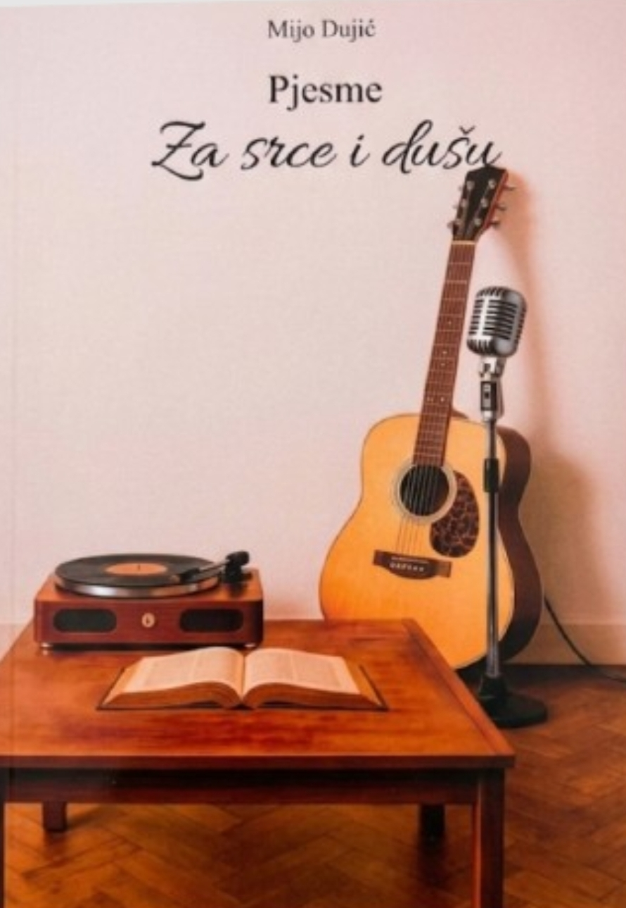

Stotinjak pjesama
Preko stotinu autorskih pjesama Mije Dujića sabranih na jednome mjestu, u jednoj knjizi.
Zbirka od stotinjak pjesama Mije Dujića — o ljubavi i čežnji, o majci i domu, o vjeri i životu. Riječi koje diraju srce i dugo ostaju u duši.

Zbirka iskrenih, toplih pjesama napisanih iz vlastita života i osjećaja — za sve koji vole pravu, srdačnu riječ.
Preko stotinu autorskih pjesama Mije Dujića sabranih na jednome mjestu, u jednoj knjizi.
O ljubavi i čežnji, o majci i obitelji, o domovini i vjeri — teme bliske svakome čitatelju.
Ukoričena zbirka praktičnog formata 15×21 cm — lijepo stoji na polici i ugodno se čita.
Uz pjesme, knjiga donosi i predgovor te bilješku o piscu — priču o čovjeku iza stihova.
„Pjesme za srce i dušu" zbirka je autorskih pjesama Mije Dujića. U njima progovara o ljubavi i rastanku, o majci i obitelji, o domovini i vjeri — jednostavno i iskreno, onako kako srce govori.
Djelić od stotinjak pjesama koje vas čekaju među koricama — od nježnih ljubavnih stihova do pjesama o domu, majci i vjeri.
…i još mnogo pjesama u punoj zbirci.
„Pjesme koje su me vratile u mladost. Svaka za sebe priča jednu iskrenu, dirljivu priču."
„Poklonila sam je majci za rođendan i rasplakala je od miline. Prekrasna, topla zbirka."
„Pjesme o domovini i vjeri diraju u srce. Knjiga koju ću iznova čitati i darivati."
Knjiga donosi stotinjak autorskih pjesama Mije Dujića — o ljubavi, obitelji, domovini i vjeri — uz predgovor i bilješku o piscu. Ima 176 stranica, format 15×21 cm.
Knjigu šaljemo unutar 2–4 radna dana od primitka narudžbe. Dostava se obavlja diljem Hrvatske putem dostavne službe, obično u roku od 1–3 radna dana.
Dostava unutar Hrvatske iznosi 3,90 €. Za narudžbe iznad 40 € dostava je besplatna. Točan iznos vidjet ćete prije potvrde plaćanja.
Naravno. Sukladno Zakonu o zaštiti potrošača imate pravo na povrat unutar 14 dana od primitka, bez navođenja razloga. Više u Uvjetima kupnje.
Plaćanje je sigurno, karticom, putem provjerene platforme Stripe. Podaci o kartici obrađuju se šifrirano i ne pohranjuju se na našim stranicama.
Cijena uključuje PDV. Za narudžbe iznad 40 € dostava je besplatna.
Dostava 2–4 radna dana